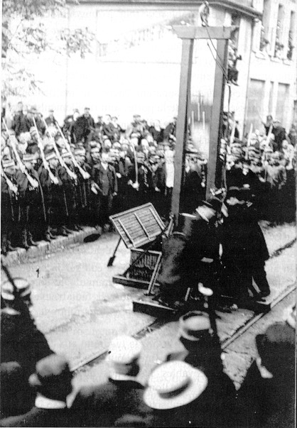

Les images des derniers instants

Document rare : il s'agit en effet d'une des uniques photographies de la guillotine qui se dressait encore sur l'échafaud. La photo, prise en 1868, précède de deux ans le décret supprimant l'échafaud et les postes de bourreaux régionaux.

Une exécution anonyme, fin du XIXème siècle.

Une exécution sur laquelle je n'ai aucune information. Probablement fin du XIXème siècle.

L'exécution de Pierre Mazué, le 30 décembre 1894, sur la place Ronde de Châlon.

Une exécution au Sénégal, avec une guillotine modèle 1793.

Une sextuple exécution à Azazga, en Algérie, le 14 mai 1895.

Le condamné à mort Pierre-Elysée Vaillat sort de la maison d'arrêt jurassienne de Lons-le-Saulnier, en avril 1897. Louis Deibler est prêt à faire son oeuvre de justice.

La guillotine prête à fonctionner sur une place de Remiremont le 08 février 1899.

Une exécution publique au début du XXème siècle en Tunisie.

Photo rehaussée à la plume de l'exécution de Languille, le 28 juin 1905 à Orléans.

Une vue large de l'avenue de Chabeuil, le 22 septembre 1909, lors de l'exécution des chauffeurs de la Drôme.

Une vue plus rappochée de la même scène. Un des condamnés arrive.

Le condamné est couché sur la bascule, Anatole Deibler s'apprête à baisser la manette.
{kind=link}

Le couperet est libéré, 40 kilogrammes tombent sur la nuque du condamné.

Les exécuteurs ramassent la tête dans la bassine pour la poser dans le panier.

L'exécution a eu lieu, les bourreaux nettoyent la guillotine.

Les bois de justice sont nettoyés.

Le couperet est remonté. La machine est prête à fonctionner de nouveau.

Le condamné suivant arrive à son tour.

L'exécution de Jules Ughetto, 19 ans, le 24 janvier 1930 à Digne-les-Bains (Basses-Alpes, maintenant Alpes de Haute-Provence). On voit le public qui se presse face à la machine, et on peut constater que le couperet n'est pas à sa place (il est possible que l'exécution vient d'avoir lieu).

La guillotine en cours de démontage boulevard Arago le 14 septembre 1932, après l'exécution de Paul Gorguloff.

Devant la prison d'Aix, les exécuteurs sont en train de démonter le "chapiteau". Georges Sarrejani vient d'avoir la tête tranchée, en ce 10 avril 1934.


Ces photos sont très rares, car il s'agit de clichés pris après une exécution privée, et pas une des moins célèbres. Le 25 mai 1946, le docteur Marcel Petiot subissait le châtiment suprême dans la cour de la prison de la Santé, à Paris. Un photographe a saisi le nettoyage et le démontage de la guillotine après la mise à mort...